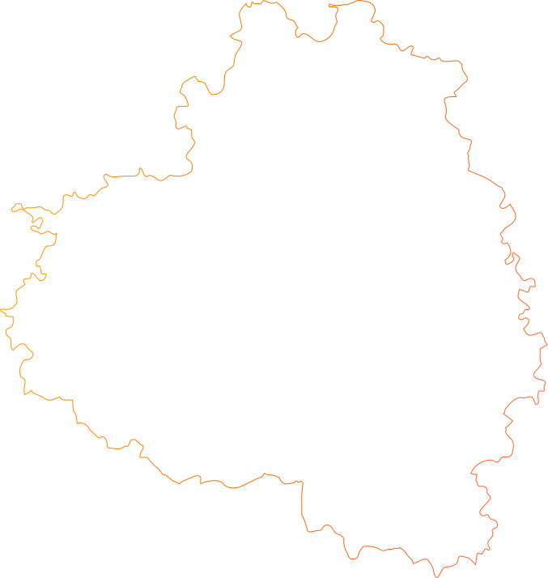
Искусство — следствие ремёсел,
в основе тульских — огонь.
Приручение огня — один из первых мифов,
который человек рассказал о себе.
Два полюса в рамках: хаос — огонь, стихия, природа, начало — и гармония — искусство, созидание, ремесло, конец. Между ними круговая стрелка: приручение ведёт от хаоса к гармонии, одичание возвращает обратно. Процесс не заканчивается.
Идея концепции — собрать разные образы Тулы,
связанные с ремеслом и искусством,
в один нарратив приручения огня.
В основе сценария — путь искры, которая вначале ещё просто физическое явление: она разжигает огонь, огонь буйствует стихией, стихию приручают — и она становится ремеслом; внутри ремесла рождается новая искра, уже идея и замысел, а воплощённый замысел становится искусством. Оба конца истории держит искра: огонь не гаснет, он меняет природу.
Цепочка из шести состояний: искра (явление) вспышкой поджигает огонь, огонь разгорается в стихию, стихия приручением становится ремеслом, в ремесле рождается новая искра — замысел, замысел воплощением становится искусством.
Герои последовательно появляются
и встраиваются в одну историю.
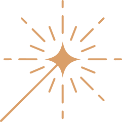
С неё всё начинается: одна точка света в темноте, которая ещё ничего не умеет. Она начало истории, огня и искусства.
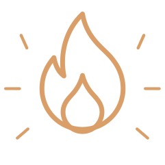
Искра разжигает огонь — то, что станет основой для ремесла.
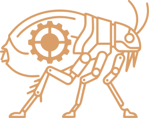
Механическая блоха — метафора неуправляемой природы, огня и технологий, которые нужно приручить.
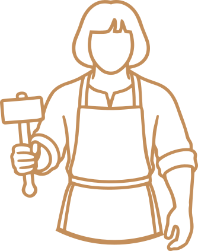
Безликий образ мастера, который вызвался сразиться с Нимфозорией и приручить её.
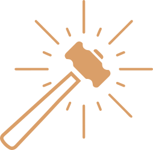
Волшебный инструмент, который помогает Левше приручить Нимфозорию — подковать блоху.
Латунь, пайка, лужение — то же ремесло, что и оружие, но с другим итогом. Огонь спрятан внутрь и обращён в кипяток: вокруг самовара собирается стол.
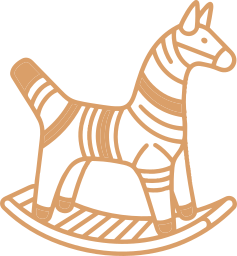
Филимоновская барыня и свистулька: три открытых цвета и тонкий голос. Единственное место, где работа позволяет себе чистый цвет и прямую радость, — кульминация на 2:05.
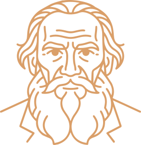
Ясная Поляна — вторая, тихая Тула. Толстой замыкает путь: огонь, прошедший через ремесло, становится зеркалом, в которое смотрят.
Памятник федерального значения
и один из лучших образцов классицизма.
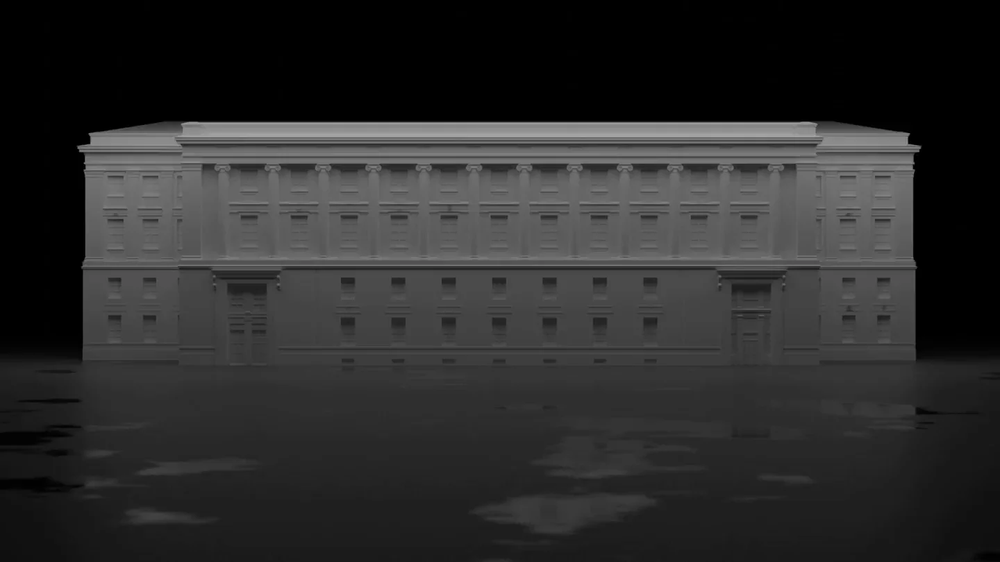
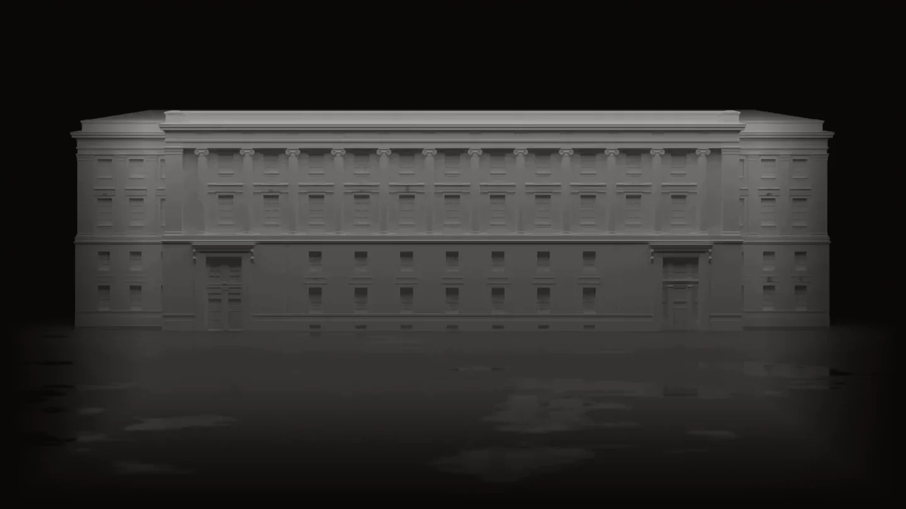
Тема конкурса раскрывается в проекте на трёх уровнях одновременно: буквальном, ремесленном и смысловом.
Укрощённый огонь в финале становится зеркалом. Бушующая стихия успокаивается до неподвижной глади — полированной латуни, глазури, воды Оки.
Пряничная доска режется зеркально: мастер вырезает то, чего не увидит, ради отпечатка. Отражение здесь — сама технология.
Искусство — то, в чём город узнаёт себя. В последнем кадре фасад петербургского здания на мгновение отражает Тулу.
Палитра взята у палехской лаковой миниатюры: тёплый свет, идущий изнутри тёмной поверхности. Цвет здесь не украшает, а измеряет — по нему видно, на какой стадии приручения находится огонь.
Проекция работает не цветом, а материалом: каждая сцена — узнаваемая поверхность, доведённая до свечения. Фактуры набираются с натуры — по съёмке тульских мастерских и музейных предметов.
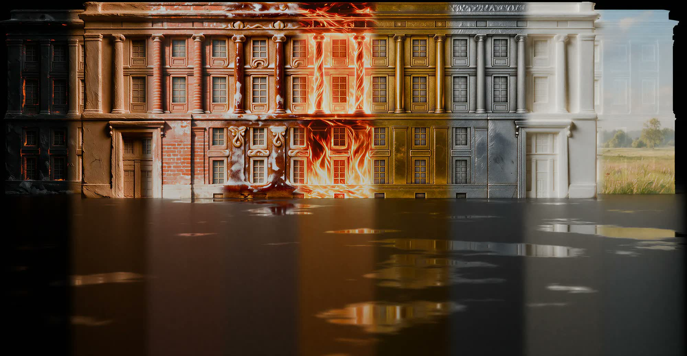
Девять состояний: от слепой стихии до тихого зеркала. Драматургия ведёт зрителя через страх, усилие, восхищение, тепло и радость — к покою.
Площадь темна, фасад почти не читается. Одна искра выхватывает фрагмент капители, гаснет, появляется в другом месте. Зритель вглядывается — работа начинается с тишины.
Пламя вырывается из оконных проёмов и взбирается по каннелюрам. Движение рваное, несимметричное, неуправляемое. Огонь ведёт себя как зверь, которого ещё никто не трогал.
Аудиоряд строится на тульской хромке — инструменте, изобретённом в этом городе в 1870-х. Народный тембр звучит в современной аранжировке, не как цитата, а как живой голос места.
Ритмическая основа приходит из кузни: удар молота задаёт темп монтажа в первой половине работы. К финалу ударные исчезают, остаётся один затихающий тон.
Гул, низкие частоты, дыхание меха. Ни одного узнаваемого инструмента.
Молот входит как бит. Первые голоса гармони — отдельными нотами.
Хромка ведёт мелодию. К пику добавляется свистулька и частушечный ритм.
Всё смолкает. Один тон, затухающий до тишины.
Огонь перестал быть хаосом и стал узором, теплом, вкусом, светом, идеей — искусством.